library(ggplot2)
library(grid)
library(tidyverse)Lab2 - The grid Graphics System
Setup
Loading packages.
The data and questions of interest
Data shows rows of incidents handled by the Police.
We wish to answer questions about youth offending (up to age 19) regarding incidence rate overall as well as ratio between male and female offenders over time. We also want to investigate whether our conclusions change if we stratify by crime type.
crime <- read.csv("nzpolice-proceedings.csv")
head(crime) Age.Lower Police.District
1 15 Tasman
2 20 Auckland City
3 40 Auckland City
4 10 Auckland City
5 15 Auckland City
6 15 Auckland City
ANZSOC.Division SEX
1 Acts Intended to Cause Injury Female
2 Abduction, Harassment and Other Related Offences Against a Person Female
3 Abduction, Harassment and Other Related Offences Against a Person Female
4 Acts Intended to Cause Injury Female
5 Acts Intended to Cause Injury Female
6 Acts Intended to Cause Injury Female
Date
1 2015-12-01
2 2015-12-01
3 2015-12-01
4 2015-12-01
5 2015-12-01
6 2015-12-01youth <- subset(crime, Age.Lower == 15)Data visualisations and questions
Question 1
youthSex <- table(youth$SEX)/nrow(youth)
female <- "#E46C0A"
male <- "#0070C0"We solve this task by creating a function for generating a grobTree using information from data. The function is made to help produce plots in questions 3, 5 and 8 as well (we need a grob(Tree) for the implementation in the challenge question 8).
youthSexData <- as.data.frame(youthSex) %>%
setNames(c("sex", "rate"))
barRatio_grobTree <- function(
data = youthSexData,
bar_height = unit(1, "cm"),
cols = list(female = female, male = male)) {
data <- data %>%
dplyr::mutate(
label = c(paste0(sex, " ", round(rate * 100), "%"))
)
femaleData <- data %>%
dplyr::filter(sex == "Female")
maleData <- data %>%
dplyr::filter(sex == "Male")
fbar <- rectGrob(x = 0,
hjust = 0,
width = unit(femaleData$rate, "npc"),
height = bar_height,
gp = gpar(col = cols$female, fill = cols$female))
mbar <- rectGrob(x = 1,
hjust = 1,
width = unit(maleData$rate, "npc"),
height = bar_height,
gp = gpar(col = cols$male, fill = cols$male))
ftext <- textGrob(x = unit(2, "mm"),
label = femaleData$label,
hjust = 0,
gp = gpar(fontface = "bold"))
mtext <- textGrob(x = unit(1, "npc") - unit(2, "mm"),
label = maleData$label,
hjust = 1,
gp = gpar(fontface = "bold"))
grobTree(fbar, mbar, ftext, mtext)
}Produce the plot using the function.
grid.draw(barRatio_grobTree())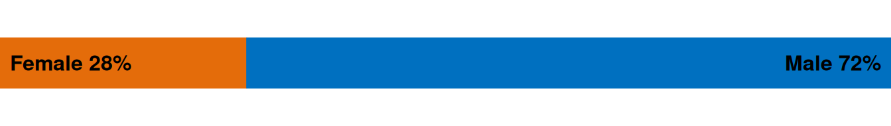
Question 2
To solve this task, we just use the barRatio_grobTree function inside a viewport of appropriate size.
pushViewport(viewport(width = unit(1, "npc") - unit(2, "cm")))
grid.draw(barRatio_grobTree())
upViewport()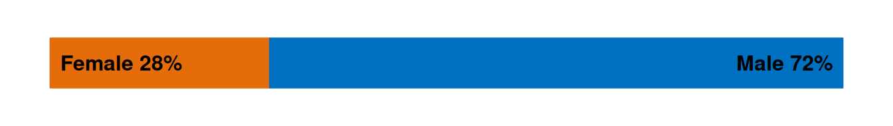
Question 3
We define a data set similar to in question 1 but in long format with a pair of rows for females and males for each year. We then create the plot using the barRatio_grobTree function defined in question 1 within appropriate viewports.
youthSexYear <- t(apply(table(substr(youth$Date, 1, 4), youth$SEX), 1,
function(x) x/sum(x)))
## Creating data in long format
youthSexYearData <- as.data.frame(t(youthSexYear)) %>%
dplyr::mutate(sex = row.names(.)) %>%
tidyr::pivot_longer(cols = num_range(prefix = "", range = 2014:2022),
names_to = "year",
values_to = "rate") %>%
dplyr::arrange(desc(year)) %>%
dplyr::mutate(id_year = dplyr::cur_group_id(), .by = year)
plot9bars <- function(data = youthSexYearData) {
id_years <- unique(data$id_year)
num_years <- length(id_years)
grid.newpage()
pushViewport(
viewport(
layout = grid.layout(nrow = num_years),
width = unit(1, "npc") - unit(1, "in") - unit(1, "cm"),
x = unit(1, "in"),
height = unit(1, "npc") - unit(2, "cm"),
y = unit(1, "cm"),
just = c("left", "bottom")
)
)
for (i in id_years) {
data_1year <- data %>%
dplyr::filter(id_year == i)
bar <- barRatio_grobTree(
data = data_1year,
bar_height = convertHeight(unit(.08, "npc"), "inches")
)
pushViewport(
viewport(
layout.pos.col=1, layout.pos.row=i
)
)
grid.draw(bar)
upViewport()
}
popViewport(0)
pushViewport(
viewport(
layout = grid.layout(nrow = num_years),
width = unit(1, "in"),
x = unit(1, "in") - unit(2, "mm"),
height = unit(1, "npc") - unit(2, "cm"),
y = unit(1, "cm"),
just = c("right", "bottom")
)
)
for (i in id_years) {
year <- data %>%
dplyr::filter(id_year == i) %>%
dplyr::pull(year) %>%
unique()
pushViewport(viewport(layout.pos.col=1, layout.pos.row=i))
grid.text(year, x = 1, hjust = 1)
upViewport()
}
popViewport(0)
}Generate plots with default and specified fig.height/width respectively, using the new plot9bars function.
plot9bars()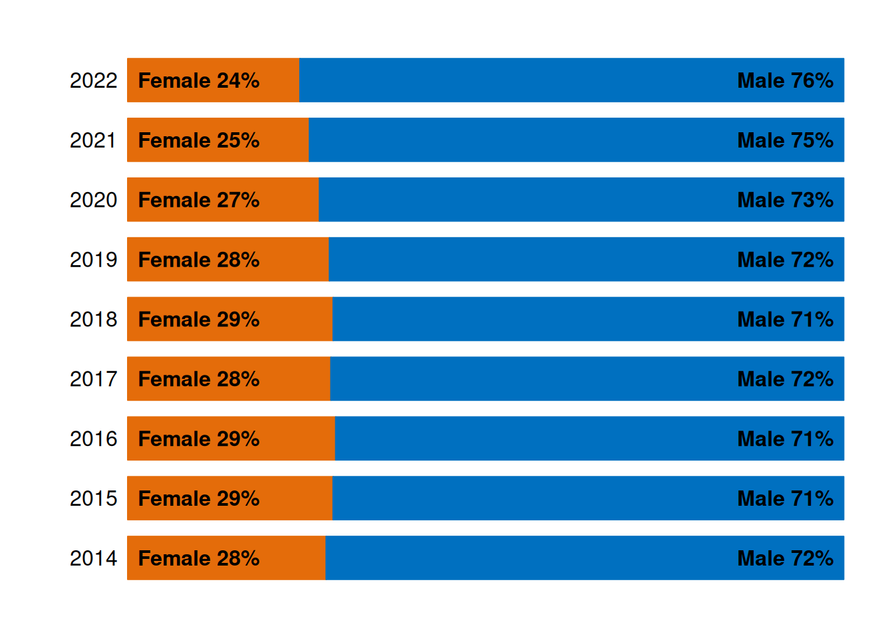
plot9bars()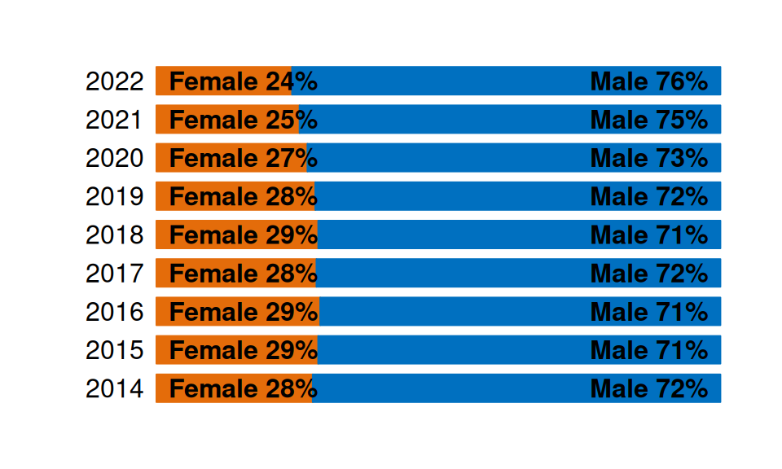
This plot gives us information about our first question of interest about the ratio of female and male offenders across time. The bars show that the proportion of female offenders has been monotonically decreasing in the years 2018-2022, where the proportion of females went from 29% of offenders to 24%.
Question 4
Define the data given in the assignment.
youth$Abbrev <-
gsub(",", "",
unlist(lapply(strsplit(as.character(youth$ANZSOC.Division), " "),
function(x) x[1])))
youthTrendType <- as.data.frame(table(youth$Date, youth$Abbrev))
youthTrendType$Date <- as.Date(youthTrendType$Var1)
## Order crime types
types <- table(youth$Abbrev)
newlevels <- names(types)[order(types, decreasing=TRUE)]
youthTrendType$Type <- factor(youthTrendType$Var2, levels=newlevels)
abb <- unique(youth[c("Abbrev", "ANZSOC.Division")])We create the facetted line plot using ggplot2.
facet_plot <- function(data = youthTrendType, scales = "fixed", ...) {
data %>%
ggplot(aes(x = Date, y = Freq, ...)) +
geom_line(show.legend = FALSE) +
facet_wrap(~ Type, scales = scales)
}
facet_plot()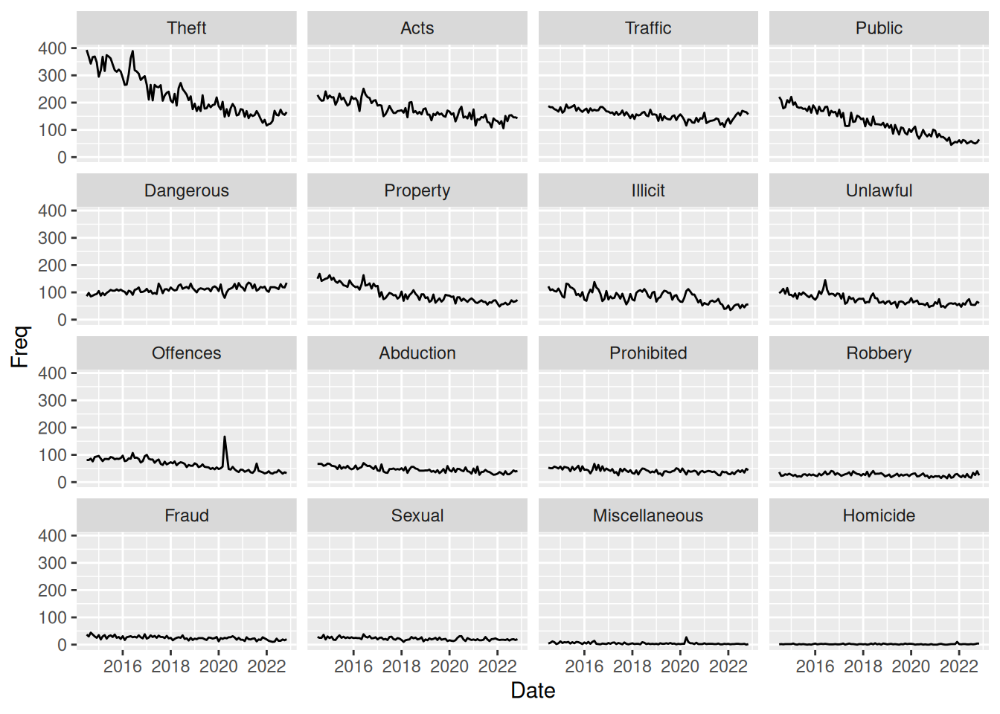
This plot tells nothing about gender differences in crime offence. However, the plot shows time trends for different crime types. It seems that for almost all types of crime, there is a downward trend in the frequency of offences. The only type of crime that is clearly not on a downward trend is the “Dangerous” (Dangerous or Negligent Acts Endangering Persons) crimes.
However, this plot does have an issue since the facet_wrap uses scales = "fixed", meaning that the y-axis scale is the same for all crime types. This makes it hard to see what is happening with the crime types that are not as frequent as fx. theft. To investigate further, we could explore the use of scales = "free".
Question 5
To solve this exercise, we can simply create viewports to plot inside. We can assign the ggplot object as a value in our environment and then plot it inside the viewport with newpage = FALSE. Then, we can plot the bar with ratios on top. A viewport is not strictly necessary here, but makes the function I created earlier work with default behavior.
fac <- facet_plot()
pushViewport(
viewport(
height = unit(1, "npc") - unit(1, "cm"),
y = 0,
just = c("centre", "bottom")
)
)
plot(fac, newpage = FALSE)
upViewport()
pushViewport(
viewport(
height = unit(1, "cm"),
y = unit(1, "npc"),
just = c("centre", "top")
)
)
grid.draw(barRatio_grobTree())
upViewport()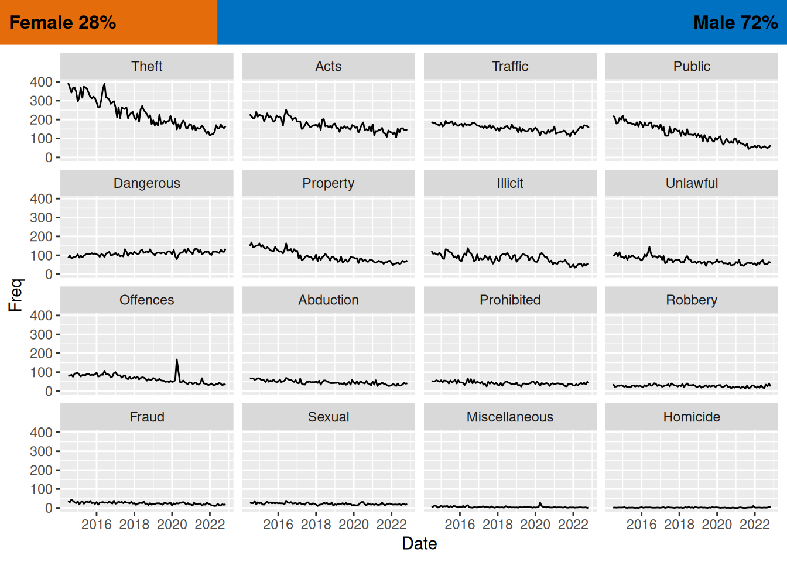
Question 6
We use the grid package to define a grob (graphical object) using the xGrob functions. In this case, we create a transparent blue box with rectGrob and then add it to each facet of the ggplot using the grid_panel function from gggrid, which adds the grob to each facet.
transBlueBox <- rectGrob(
width = unit(.15, "npc"),
x = 1,
hjust = 1,
gp = gpar(col = male, fill = male, alpha = 0.35))
facet_plot() +
gggrid::grid_panel(transBlueBox)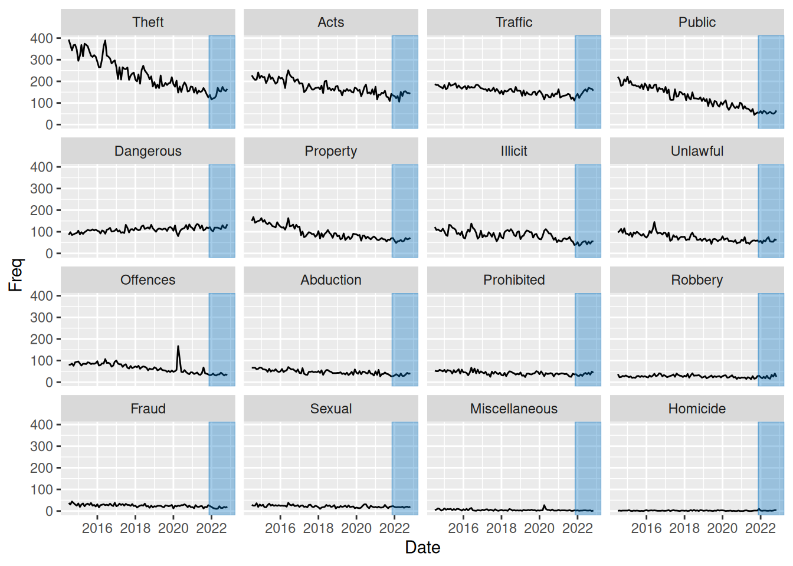
Question 7
To solve this task, we can make use of the fact that gggrid::grid_panel can take a function producing a grob rather than a static grob as input. In this case, since we want to color the part of the graph from 2022, we create a data set consisting of only values from this period. We then create a function which creates a rectGrob as a function of input data, using ranges to define the size of the rectangle. We then input this function add_bar in gggrid::grid_panel, which uses the function within each panel. Thus, within each panel, data will consist of observation only from year 2022 and that type of crime. We can then simply find the ranges of the x- and y- values to define the area of the rectangle.
youthTrendType2022 <- youthTrendType %>%
dplyr::filter(lubridate::year(Date) >= 2022)
add_bar <- function(data, coords) {
max_y <- max(coords$y)
min_y <- min(coords$y)
max_x <- max(coords$x)
min_x <- min(coords$x)
diff_x <- max_x - min_x
rectGrob(
x = min_x,
width = diff_x,
hjust = 0,
y = min(coords$y),
height = max_y - min_y,
vjust = 0,
gp = gpar(col = male, fill = male, alpha = .35)
)
}
facet_plot() +
gggrid::grid_panel(add_bar,
data = youthTrendType2022)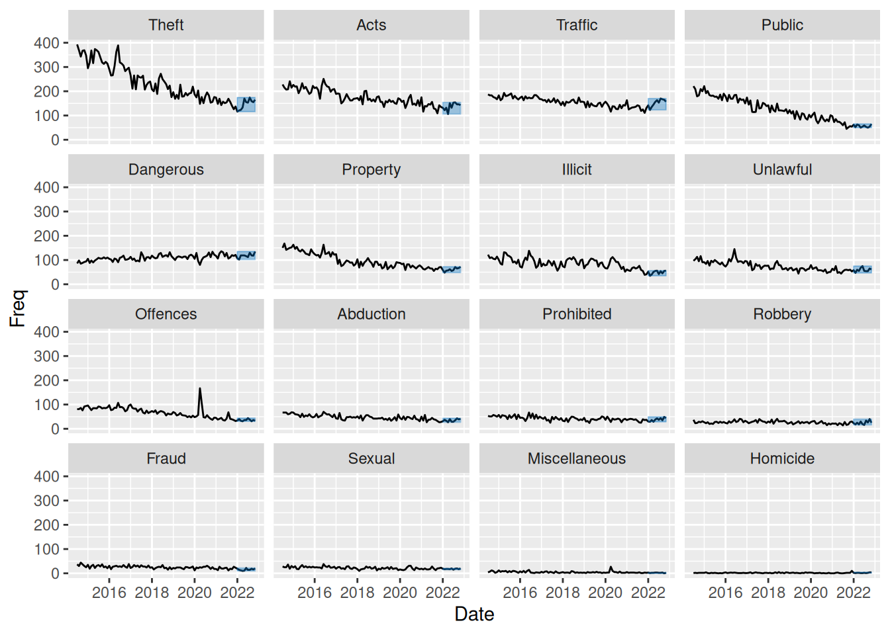
This plot, like in question 4 and 6 does not help us answer questions regarding gender differences in offending. In question 4 we discussed how the plot can be used to identify a downward trend over time for most crime types except for “Dangerous” (Dangerous or Negligent Acts Endangering Persons) crimes.
This plot however highlights data from year 2022, which makes us notice an upward trend in data from this year alone for all crime types. This is something that was not easily “catchable” in the plot from question 4. So this plot does help us understand what is happening from year 2022 and onward.
The plot still suffers from the fact that not-so-frequent crime types are hard to see, so below I have made the same plot but with scales = "free_y" to better be able to investigate the low-frequency crime types.
facet_plot(scales = "free_y") +
gggrid::grid_panel(add_bar,
data = youthTrendType2022)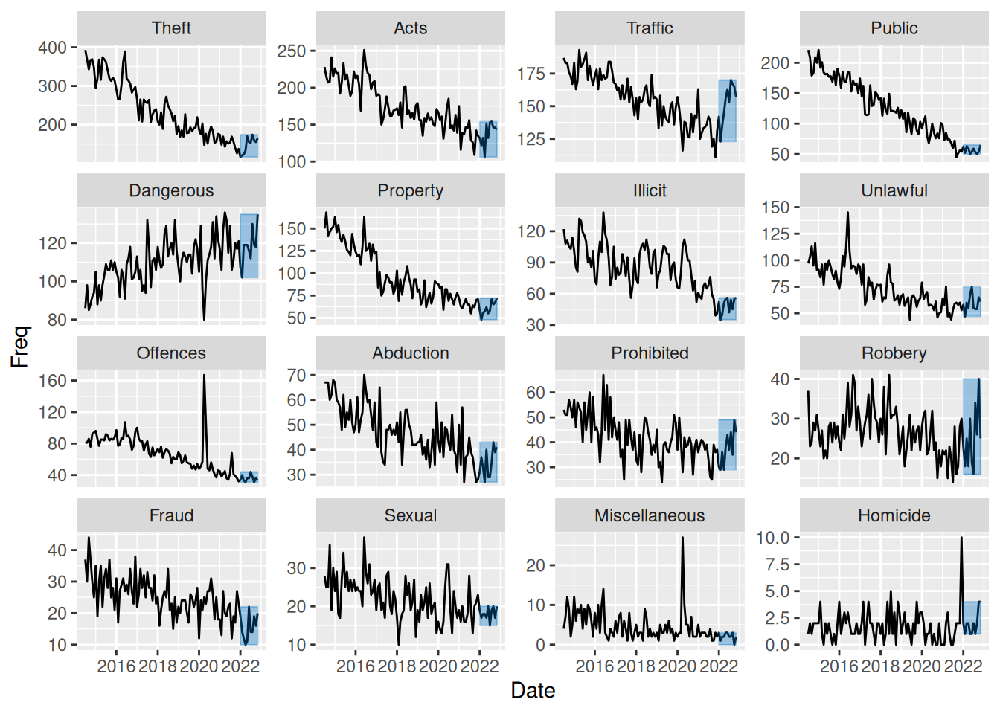
This plot shows that even for the low-frequency crime types there is the same downward trend in most of data but with a small increase from year 2022 and onwards.
Challenge
Define data as in assignment to use for plot:
youthTrendTypeSex <- as.data.frame(table(youth$Date, youth$Abbrev,
youth$SEX))
youthTrendTypeSex$Date <- as.Date(youthTrendTypeSex$Var1)
youthTrendTypeSex$Type <- factor(youthTrendTypeSex$Var2, levels=newlevels)
youthTrendTypeSex$Sex <- factor(youthTrendTypeSex$Var3)Like in question 7, we create a function with arguments data and coords that we input to gggrid::grid_panel. In this case, we create a summary of the proportion of female and male offenders within each panel (crime type) and use these summaries to create bars on the right to visualise this. We also add white horizontal lines at break points 0.1 to 0.5 to make it more easy to see the distribution of men vs. women in each panel.
To create such a collection of grobs (2 rectangles to form the bar with proportions and a segment with white lines), we use the gTree function and specify all 3 grobs as children using a gList.
To also add a bar with the overall proportions to the right of the plot, we simply utilise viewports as in question 5, but now using the angle argument to create a vertical bar. We also extract the colors used as a default from ggplot to color our groups and use them for our bar.
add_rate <- function(data, coords) {
rateData <- data %>%
summarise(offences = sum(y), .by = colour) %>%
mutate(rate = offences / sum(offences))
bar1 <- rectGrob(
x = 1,
width = unit(1, "mm"),
hjust = 1,
y = 0,
height = rateData[1, ]$rate,
vjust = 0,
gp = gpar(col = rateData[1, ]$colour,
fill = rateData[1, ]$colour)
)
bar2 <- rectGrob(
x = 1,
width = unit(1, "mm"),
hjust = 1,
y = 1,
height = rateData[2, ]$rate,
vjust = 1,
gp = gpar(col = rateData[2, ]$colour,
fill = rateData[2, ]$colour)
)
lines <- segmentsGrob(x0 = unit(1, "npc"), x1 = unit(1, "npc") - unit(1, "mm"),
y0 = seq(0.1, 0.5, 0.1), y1 = seq(0.1, 0.5, 0.1),
gp = gpar(col = "white", fill = "white"))
gTree(children = gList(bar1, bar2, lines))
}
sexFacetPlot <- function(data = youthTrendTypeSex, scales = "fixed") {
grid.newpage()
p <- facet_plot(data = data,
color = Sex,
scales = scales) +
gggrid::grid_panel(add_rate)
pushViewport(
viewport(
x = 0,
just = c(0, .5),
width = unit(.9, "npc")
)
)
plot(p, newpage = FALSE)
upViewport()
cols_in_plot <- scales::pal_hue()(2)
cols_as_list <- as.list(cols_in_plot) %>% setNames(c("female", "male"))
pushViewport(
viewport(
x = unit(1, "npc") - unit(.1, "npc") / 2,
height = unit(.1, "npc"),
width = convertUnit(
unit(0.7, "npc"),
unitTo = "in",
axisFrom = "y",
axisTo = "x"),
angle = 90
)
)
grid.draw(barRatio_grobTree(cols = cols_as_list,
bar_height = unit(6.5, "mm")))
upViewport()
}Use the new function to create the plot:
sexFacetPlot()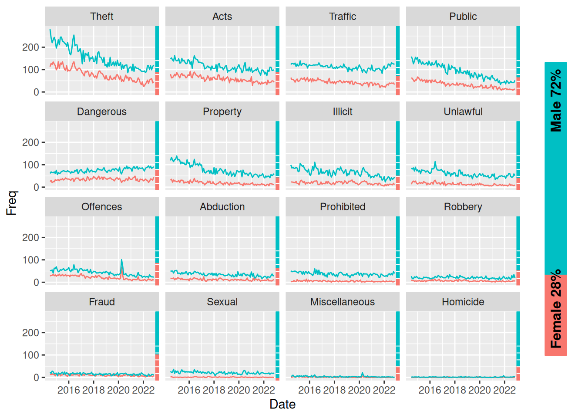
This plot now helps us answer all questions of interest. Again, using free scales in the facets, I think we gain more insight in what is happening:
sexFacetPlot(scales = "free_y")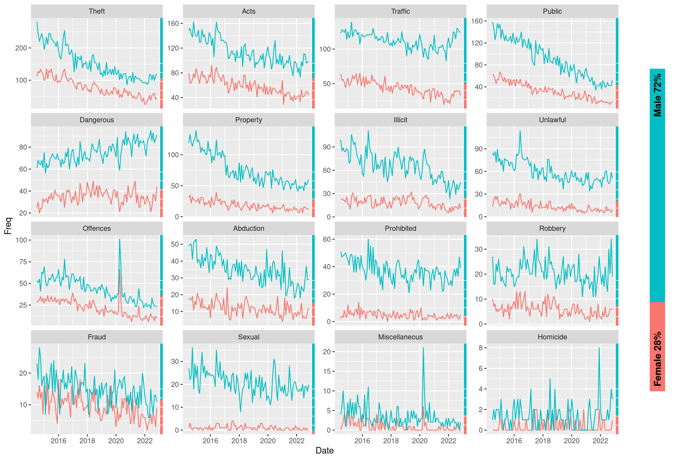
Overall summary
The grid package
The grid package allows total customisation in creating grobs (graphical objects). They can either be drawn directly using grid::grid.xx functions or created as grobs with grid::xxGrob functions to be drawn later (with grid::grid.draw). This enables us to gather different grobs in a grob tree with grid::gTree and specifying grobs with a grid::gList as the children argument (alternatively use grid::grobTree when all components are grobs). See more in question 1.
Using viewports
We can use grid::viewport with grid::pushViewport to draw whatever we want inside a certain area of our “full plotting area” and then go to a parent viewport with grid::upViewport (grid::popViewport navigates to parent viewport AND deletes the current viewport from the viewport tree). See questions 2, 3, 5 and 8.
Additional takeaways about viewports:
- Note this also works with
ggplot2by assigning theggplotobject a value (fx.p) and then plotting it “inside the viewport” withplot(p, newpage = FALSE). See questions 5 and 8. - We can use the
grid::convertUnitfunction to change the axis we are referencing (useful fx. when creating a viewport withangle = 90/270). See question 8. - A strong way of using viewports is using
xscaleand/oryscaleparameters in thegrid::viewportfunction and the using thegrid::unitfunction withunits = "native"specified to make your grobs relate to the scale of the viewport. - Use of
grid::grid.layoutas in question 3 can help with many situations.
Note that ggplot2 is built on grid. ggplot2 uses viewports from grid. Fx. on a simple plot, it uses (nested) viewports for the background, axis text, axis ticks, etc. etc.
Combining grid and ggplot2 - The gggrid package
As mentioned above, viewports and ggplots integrate nicely using just grid and ggplot2. However, it’s easy to combine elements of grid to ggplots to create overlays on each facet/panel with gggrid::grid_panel or for each group using gggrid::grid_group.
These functions either take a static grob or a function that will create a grob (or a tree of grobs) within each panel/group. The function takes data and coords as an argument, and it will then use this function to draw using the function on only the data in that panel (stratified data). Note that the coords are transformed values of x and y (from the aesthetic mapping) to scale 0-1, so it can be plotted correctly in the scale of the viewport. data contains the untransformed data and includes columns of other aesthetics (fx. colour).
See more in questions 6, 7 and 8.
Answering questions of interest
The proportion of female vs. male offenders is on a downward trend with the proportion of female offenders monotonically decreasing from 29% in 2018 to 24% in 2022, which is visible from the plot in question 3.
From question 4 (and 5) we see an overall downward in frequency of offences. We do however see an increase for a single crime type “Dangerous” (Dangerous or Negligent Acts Endangering Persons). Looking at the plot in question 6, it becomes apparent that across all crime types, there seems to be an increase from the start of 2022. This is further highlighted in question 7, where we use a more precise, data-driven method to show the increase from start of year 2022.
Looking at the plot from the challenge, we can comment on some of the same things as in the other plots, but those plots are more “specific” and perhaps a bit better at answering each question. This plot however gives an overview of both the proportion of female vs. male offenders through time as well as overall frequency across time and crime types. The plot also provides information not previously available by showing the proportions for each crime type.